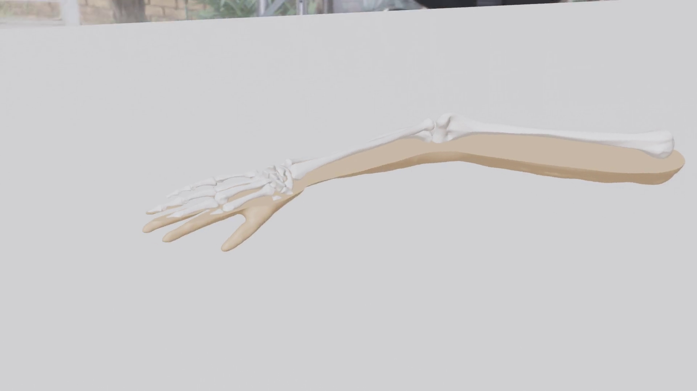
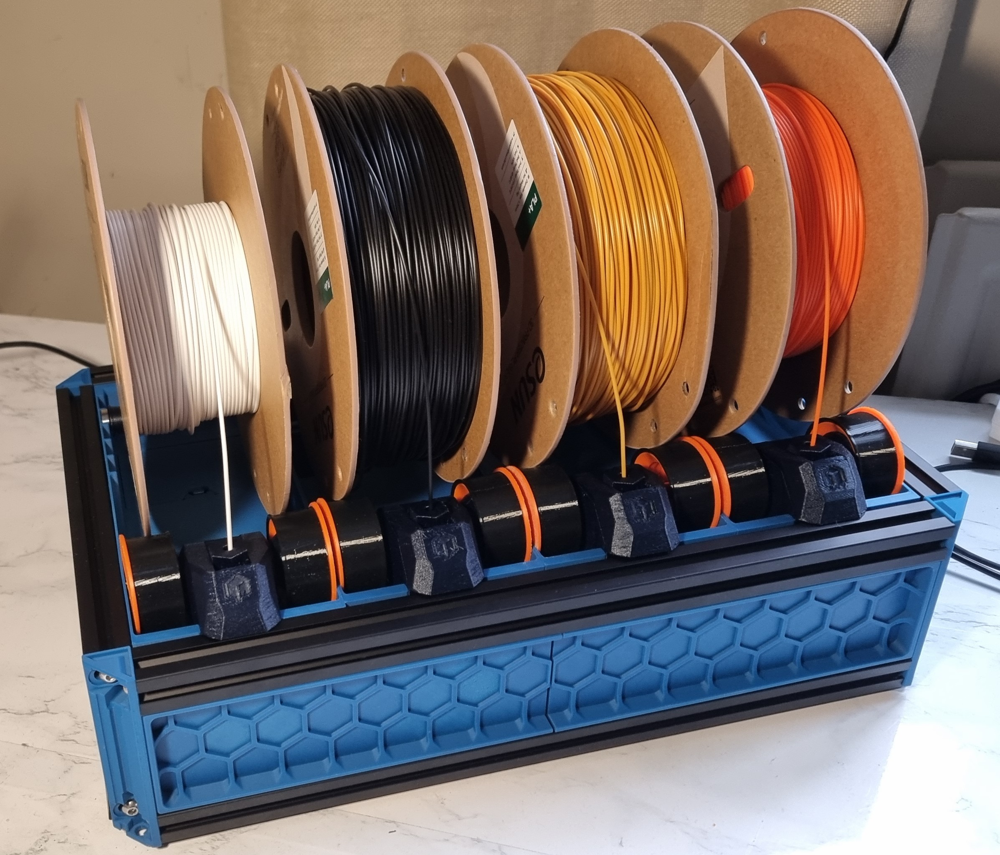
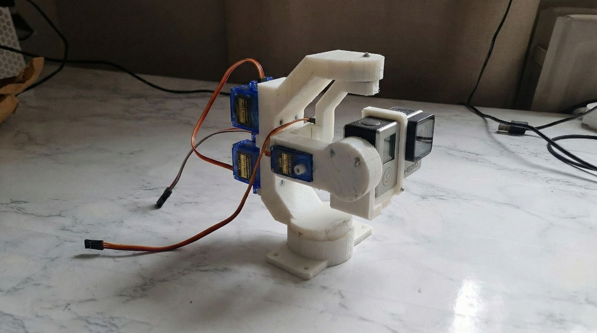
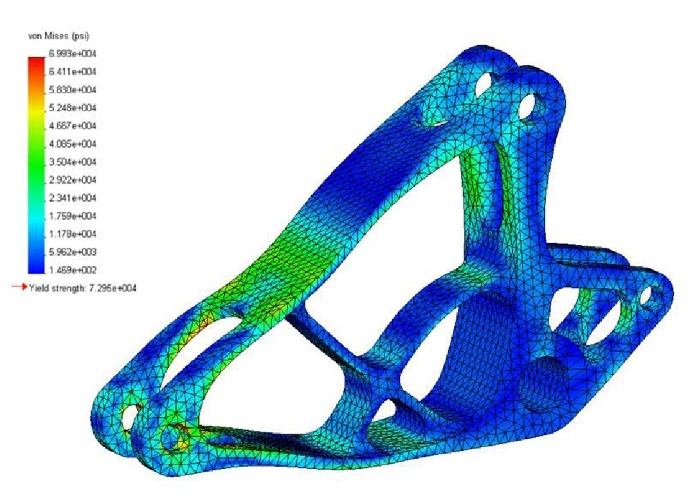

Hi, I'm Hishaam. I am a Robotics Engineering student who loves building things that move, interact, and solve real problems. Whether it's a haptic medical trainer, an autonomous robot, or a full-stack web application, I enjoy the entire process of bringing ideas to life.
My approach to engineering is highly practical. While I really enjoy the mathematical side of my degree—like control systems and numerical methods—I learn best by actually getting my hands dirty. I am constantly tinkering, whether that means debugging firmware for a bomb disposal robot at work, or stripping down and upgrading 3D printers in my bedroom.
I treat my home workshop as a rapid prototyping lab, and over the years, I've expanded my skillset beyond pure mechatronics into web development and e-commerce, building platforms to share my physical creations with others.
Outside of the lab, I've spent years as an Explorer Scout Leader. Running weekly sessions and organising outdoor expeditions for teenagers has been the best crash course in leadership, communication, and learning to keep a cool head when things don't go to plan!
A mix of robotics hardware, firmware, and web platforms.

A haptic-enabled robotic arm designed to help medical students practice setting bone fractures. I built a fluidic pump system to simulate real blood flow and integrated force sensors into the arm to calculate a real-time "Pain Index" based on how rough the trainee is being.

I heavily modified an Ender 3 with an automated filament changer. It uses custom macros to automatically swap materials mid-print, allowing me to print complex multi-material parts.

A DIY 2-axis camera stabiliser. I wrote the custom C++ firmware from scratch, implementing real-time PID control loops to keep the camera perfectly level against movement.

As part of the university racing team, I worked on redesigning the suspension geometry. It was essentially a massive balancing act in Ansys, trying to find the perfect middle ground between track grip and vibration damping.
bones-of-steel.com ↗
I wanted a way to turn my rapid prototyping skills into a tangible business. I built and launched this full-stack e-commerce platform from the ground up, and currently manage everything from front-end code to 3D-printing product fulfilment.
A dedicated platform I built to showcase my additive manufacturing portfolio and offer freelance 3D printing and CAD design services locally.
madebylayers.co.uk ↗
Getting hands-on with bomb disposal units was an incredible experience. I spent my time debugging embedded firmware, diagnosing physical failure points, and helping the team overhaul legacy robot models. It taught me exactly how robust hardware needs to be when failure isn't an option.
I joined the quant stream to see how my mathematical background translated to finance. I got exposure to modelling complex financial systems and saw firsthand how institutions handle massive, noisy datasets.
Managed sensitive clinical datasets for a primary healthcare provider, helping to streamline operations and clear out massive system backlogs.